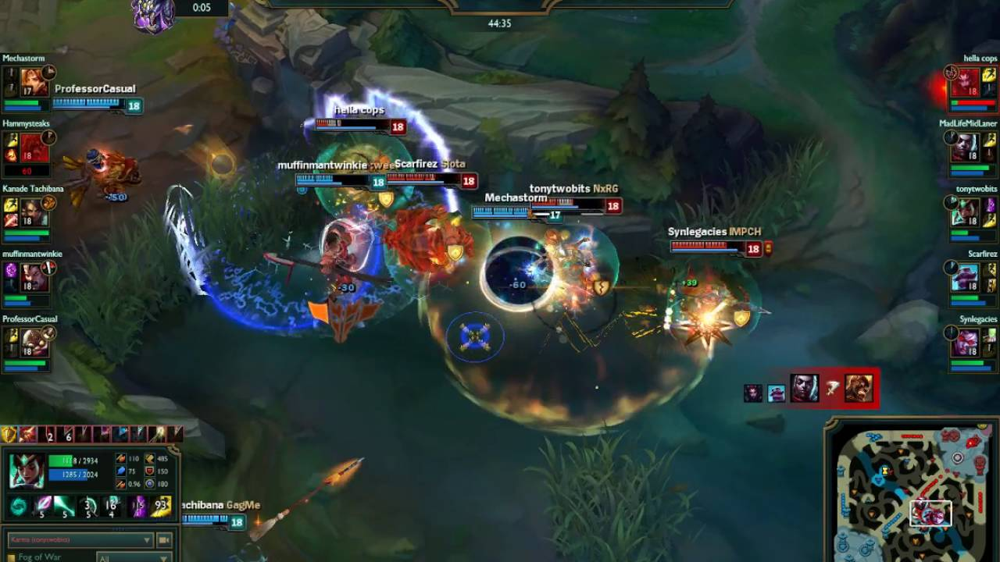

New to League of Legends

What is League of Legends?
League of Legends is a game in the Multiplayer Online Battle Arena (MOBA) genre. Two teams, consisting of five players each, compete against each other to be the first team to destroy the opposing team's Nexus. In their way stand not only the opposing team's 5 players, but also a number of computer (AI)-controlled units, called minions. Players themselves control units called "Champions", and they must destroy enemy "Towers" and "Inhibitors" in order to get to the Nexus. Destroying these buildings grants players in-game resources that make their champions stronger. Once a nexus is destroyed, the game is over and everything is reset for the next game.
Overview
Champions are the player-controlled units in League of Legends. Champions are distinguishable from other units in a few ways. First, generally they're bigger than game-controlled units; second, an experienced player will be able to recognize all of their models; and third, and easiest to tell, all units in the game have health bars floating above their heads, and champions' health bars look different from those of other units.
Each champion has several ways of interacting with the map and other units in the game: moving, auto-attacking, casting abilities, casting summoner spells, buying items, and teleporting back to base. Most champions have four abilities, one of which is an ultimate, and also an "innate" ability, which is usually a passive effect. They also have two summoner spells.
Game Flow
During the early parts of the game, known as the "laning phase", champions try to kill minions in order to gain experience and gold. The experience is used to level up a champion's abilities and base stats, while gold is used to empower champions through items. At a certain point in the game, when teams feel like they are strong enough, they will group together as a unit of four or five to fight each other (fights with lots of people involved are called "teamfights") and kill towers. If a team loses all the towers and an inhibitor in one lane, their Nexus becomes vulnerable. If a team kills the enemy Nexus, they win the game.

Team Fight ExampleHow to Tell Which Team is Ahead
There are a couple things you can look at. Between champions that are laning against each other, the one with a higher level or more minions killed is usually ahead. Total team gold and towers taken, both of which are displayed in the spectator overlay, are usually good indicators to tell which team is ahead. If one team is ahead by 5k gold at 20 minutes, that's a pretty big deal. If a team is ahead by 10k gold at 30 minutes, that's a pretty big deal. If the game is still going on at 50 minutes, it's harder to tell. Positioning on the map also plays a part. If the champions are all near the blue team's base, the red team is probably ahead. If the champions are all near the red team's base, the blue team is probably ahead.
There are a couple things you can look at. Between champions that are laning against each other, the one with a higher level or more minions killed is usually ahead. Total team gold and towers taken, both of which are displayed in the spectator overlay, are usually good indicators to tell which team is ahead. If one team is ahead by 5k gold at 20 minutes, that's a pretty big deal. If a team is ahead by 10k gold at 30 minutes, that's a pretty big deal. If the game is still going on at 50 minutes, it's harder to tell. Positioning on the map also plays a part. If the champions are all near the blue team's base, the red team is probably ahead. If the champions are all near the red team's base, the blue team is probably ahead.